Work - Agentic Search¶
Work - Agentic Search transforms how you interact with enterprise data by providing an intelligent search and orchestration layer across your organization's knowledge sources. Platform now delivers improved source attribution, comprehensive citations, and native document generation capabilities, including PDF and PowerPoint exports.
This guide walks you through the complete setup process, from initial application creation through production deployment. You'll configure the agentic architecture, integrate with your existing tools, and validate the deployment to ensure seamless operation within your environment.
Prerequisites¶
Before you begin the configuration process, ensure you have access to the following:
- Admin credentials for the Agent Platform.
- OpenAI or Azure OpenAI API credentials.
- Platform admin panel access with appropriate permissions.
- Active session tokens for MCP tool authentication.
Creating Agentic Application¶
Before creating the Agentic Search application, you must first configure a model in the Agent Platform. The Agentic Search operates as an agentic application within the Agent Platform.
To download the pre-configured base application package.
- Click the download link provided by your administrator to obtain the base app export.
- Save the downloaded file to an accessible location on your system.
You'll start by importing a pre-configured base application that provides the foundational architecture.
- Open Agent Platform → Create App.
- Select Import Existing App.
- Upload the base app provided by your administrator.
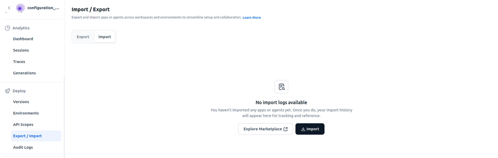
{kind=link}
The import process establishes your working environment with the core components already in place. You'll customize these components in the subsequent steps to match your organization's specific requirements and tool ecosystem.
Configure Language Models¶
Agentic Search relies on advanced language models to power its intelligent routing and response generation. You'll configure these models for both the supervisor agent and the data assistant agent.
Access the Models section within your application and initiate the model addition process. The platform supports both OpenAI and Azure OpenAI configurations, giving you flexibility based on your organization's infrastructure and compliance requirements.
- Navigate to Models > Add Model.
- Add your OpenAI or Azure OpenAI models.
- Open Supervisor and select your preferred model.
- Open Data Assistant Agent and select a model.
You can use the same model for both agents or select different models based on your performance requirements.
Set Up MCP Tools¶
MCP tools enable Agentic Search to connect with your enterprise systems. The configuration establishes secure connections using session-based authentication.
Create the MCP Tool¶
First, retrieve the Server URL from your environment.
- Log into the Platform and go to Admin Hub > Assistant Configuration.
- Select MCP Server > Default Server.
- Copy the Server URL displayed.
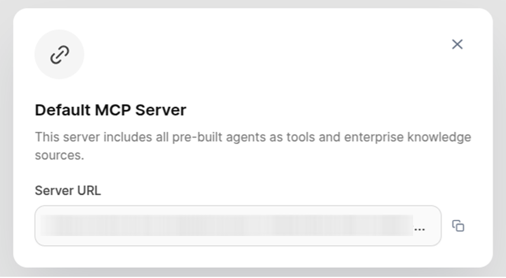
{kind=link}
Now, create the MCP tool in the Agent Platform.
- Go to Tools > MCP Tools > Create Tool.
- Paste the Server URL you copied from the platform.
- Add the authentication header:
- Key:
auth - Value:
{{memory.sessionMeta.metadata.aiForWork.sessionToken}}
- Key:
- Save the tool configuration.
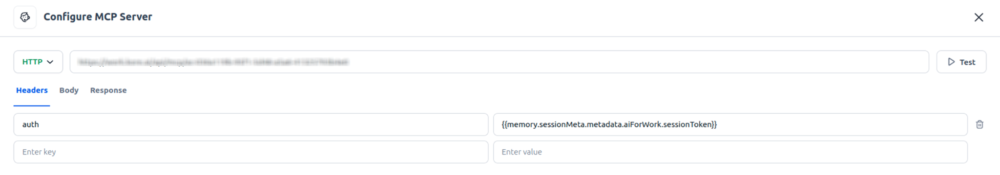
{kind=link}
Enable Tool Integrations¶
After saving your MCP tool configuration, you'll enable specific tool integrations through the Tool Selection interface. Agentic Search supports various productivity tools, including Google Workspace connectors for contact lookup, email management, and calendar operations.
- Navigate to Tools → Tool Selection.
- Enable the following tools:
- Google Connector tools (Contact Lookup, Send Email, Read Emails, Calendar).
- Outlook tools (if your organization uses Outlook).
- Active Search Apps (based on your tenant configuration).
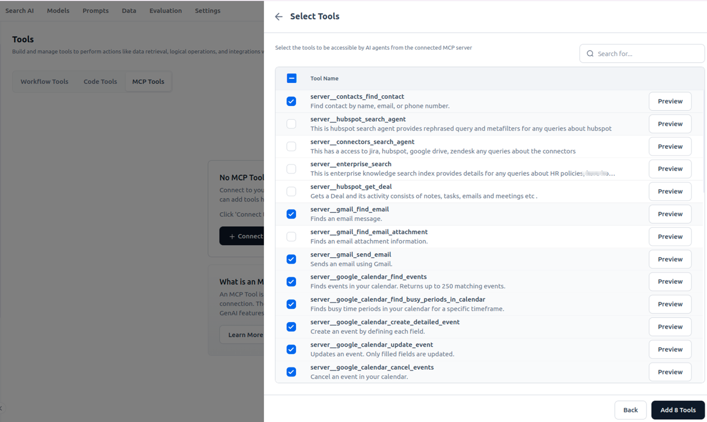
{kind=link}
Configure Agent Workflow¶
The agent architecture determines how Agentic Search processes and routes queries. Your configuration approach depends on the number of search applications your organization maintains.
Multiple Search Apps¶
Organizations with multiple search applications benefit from the Query Hub pattern. The Query Hub agent acts as an intelligent router, analyzing incoming queries and directing them to the appropriate specialized search application. Keep the Query Hub in your configuration and ensure all search apps connect to it, creating a centralized orchestration point.
- Retain Query Hub in your configuration.
- Add all search apps to Query Hub.
- Configure search app descriptions in Knowledge Source settings.
Single Search App¶
If your organization operates a single search application, the Query Hub introduces unnecessary complexity. Remove it from your configuration so queries flow directly to your search application for processing.
If you have only one search application, remove the Query Hub to simplify the workflow.
- Delete Query Hub from your configuration.
- Allow queries to flow directly to your search application.
Configure Data Assistant¶
The Data Assistant agent requires access to all configured tools. Open its configuration and add the tools you enabled in the previous step. This gives the agent the capabilities it needs to retrieve information, send communications, and perform actions across your integrated systems.
- Open the Data Assistant agent.
- Add all enabled tools to this agent.
- Ensure the agent has access to all necessary integrations.
Create and Deploy Version¶
With your application configured, you'll create a deployable version and establish an environment for production use. The versioning system allows you to maintain multiple configurations and roll back if needed.
-
Go to Deployment → Versions → + New Version.
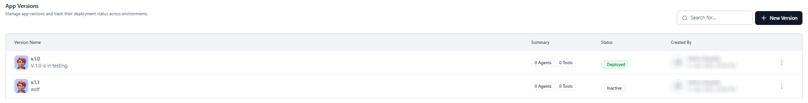
-
Save the version to capture your current configuration.
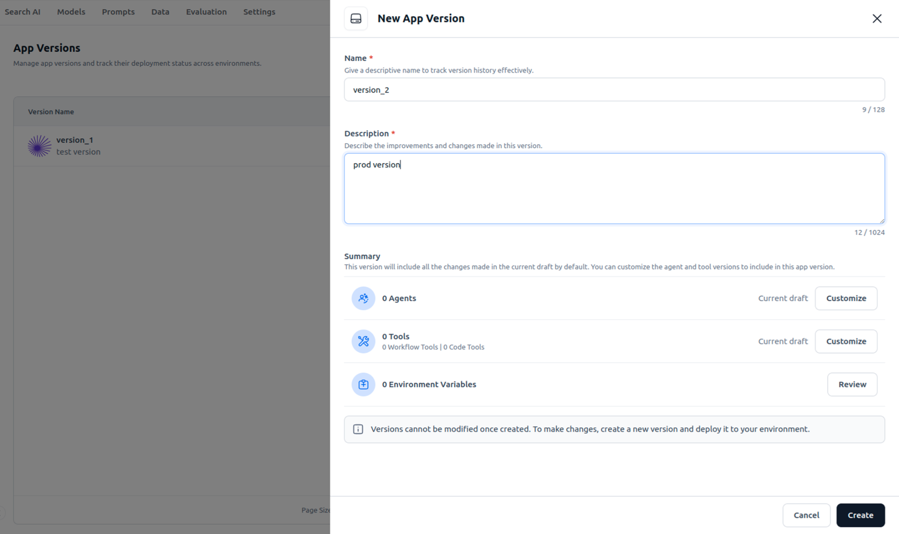
-
Navigate to Deployment → Environments → + New Environment.
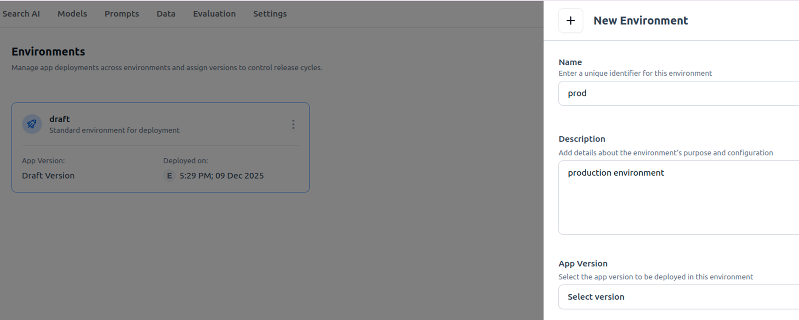
-
Deploy your version to the new environment.
{kind=link}
{kind=link}
{kind=link}
Generate API Credentials¶
Create the API credentials that the Platform uses to communicate with your deployment.
- Copy the deployment cURL from your environment.
-
Go to API Scoping → + New API Scope.
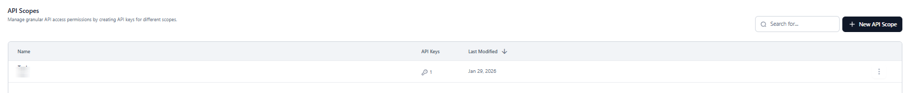
-
Fill in the required fields.
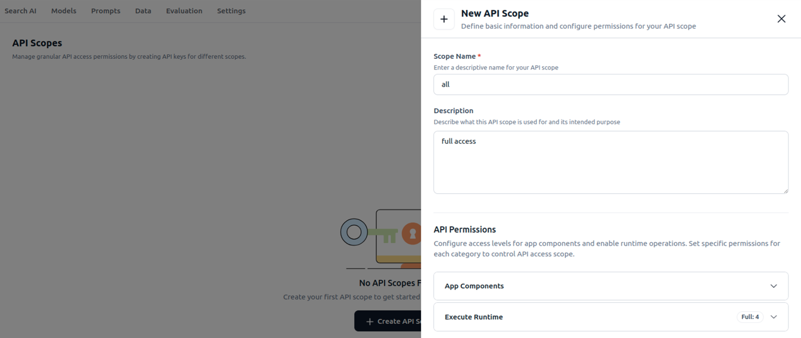
-
Navigate to API Keys → Create Key using your scope.
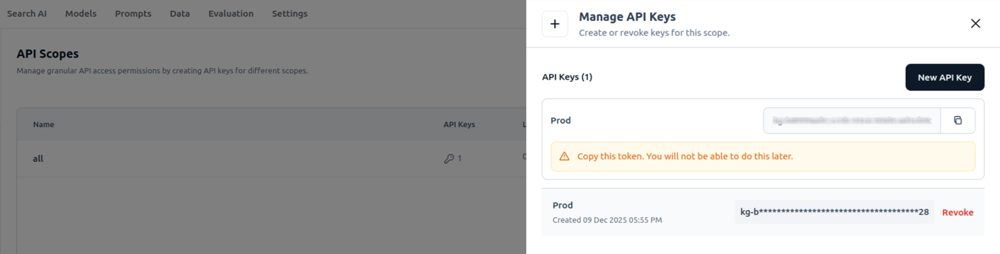
-
Replace the placeholder API key in the cURL with your generated key.
{kind=link}
{kind=link}
{kind=link}
Keep this updated cURL command ready for the next step.
Register with AI for Work¶
The final configuration step connects your deployed Agentic Search instance to the Platform, making it available to users through the search interface.
- Log into the Platform and access Knowledge Sources > Agentic Apps.
- Enter a name and description for your application.
- Paste your updated cURL command.
-
Locate the streaming configuration and change:
- From:
"stream": {"enable": false} - To:
"stream": {"enable": true}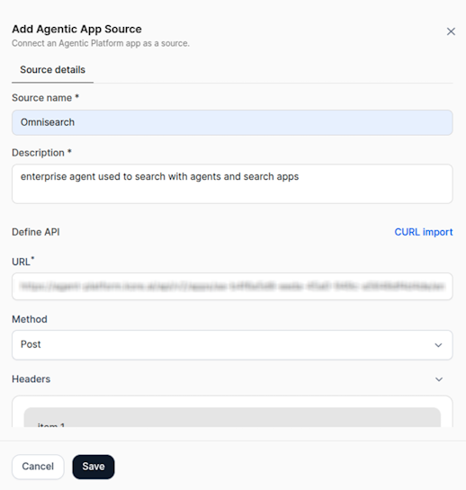
- From:
-
Before saving, you must update the streaming configuration.
-
Inside the Add Agentic App Source window, scroll to the JSON body and modify. This activates real-time token-level streaming so users can see responses as they generate.
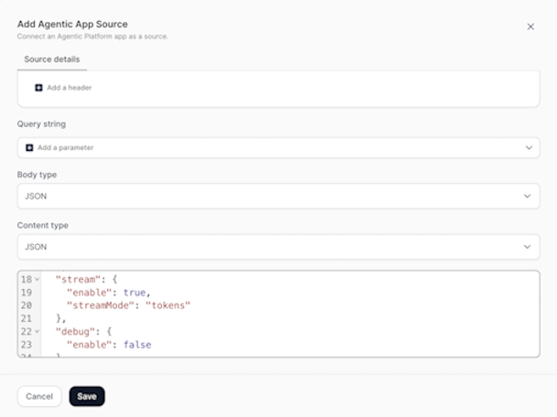
-
Click Save.
{kind=link}
{kind=link}
Enabling streaming provides a real-time response display for a better user experience.
Validate Your Deployment¶
With everything configured and deployed, validate that Agentic Search functions correctly end-to-end.
In platform, navigate to the Work tab's search interface. Submit a test query that should trigger your configured agents and tools. The system should process your query and return relevant results.
- Open AI for Work → Search Bar (Work tab).
- Submit a test query.
- Verify the results appear correctly.
- Check Agent Platform → Traces to review the execution flow.
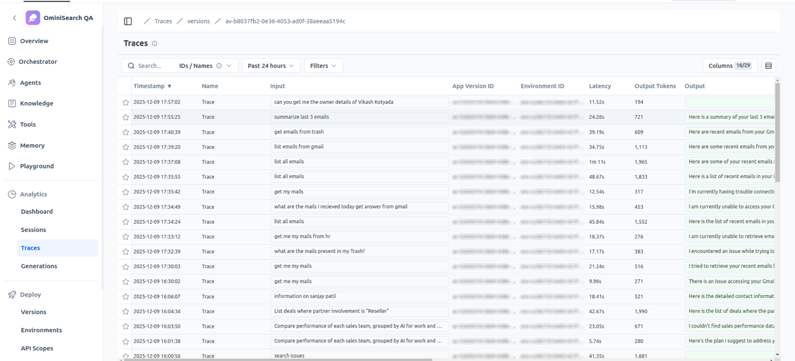
{kind=link}
The traces show how your query moved through the agent architecture, which tools were invoked, and how the response was generated. Use this diagnostic view to troubleshoot any issues.
Customize Agent Behavior¶
Fine-tune how Agentic Search interprets queries and formats responses by modifying agent prompts.
You can adjust behavior through:
- Supervisor prompt: Controls high-level routing logic and workflow decisions.
- Agent instructions: Defines specific behaviors for individual agents.
Access these settings in the Agent Platform and edit the prompts based on your requirements. Changes take effect when you deploy your next version.
Agent Configuration and Prompting Guidelines¶
Use the following guidelines to ensure Agentic Search operates within its intended scope, produces reliable results, and delivers a consistent user experience.
- Define Clear Agent Scope and Purpose: Clearly state the purpose of each agent and explicitly restrict it to Agentic Search–related responses. In the agent instructions, prohibit the use of general AI knowledge or information that does not originate from the configured search applications. This prevents unintended or misleading responses.
- Enforce Mandatory Source Citations: Configure agents to include source citations in every response. Citations ensure that answers remain grounded in the underlying search applications and improve trust, traceability, and auditability of the results.
- Specify Out-of-Scope Query Handling: Define how agents should respond to queries that fall outside the supported knowledge domain. Agents must clearly acknowledge limitations and inform users when requested information is unavailable, rather than attempting to infer or generate answers.
- Write Comprehensive Search Application Descriptions: In Enterprise Knowledge Source settings in the Platform, provide detailed descriptions for each search application. Include:
- The application’s purpose
- The data sources it covers
- Explicit scope boundaries
- Validate Scope Compliance Through Testing: After configuration, test the system using intentionally out-of-scope and edge-case queries. Verify that agents adhere to defined boundaries and dont revert to general knowledge when relevant search results are unavailable.
- Structure Prompts for Clarity and Priority: Organize prompts using structured formats to improve readability and instruction priority.
- Use XML-style tags (for example,
<section>...</section>) to separate logical blocks. - Apply Markdown elements such as headings (
#), emphasis (*italic*,**bold**), and blockquotes (>) to highlight important instructions.
- Use XML-style tags (for example,
- Handle Edge Cases in Supervisor and Agent Prompts: Define explicit logic in the Supervisor prompt to control:
- Response formatting.
- Data volume passed from agents.
- Aggregation or filtering of agent outputs.
- Use Dynamic Context Placeholders in Prompts: Incorporate supported placeholders to provide real-time user and session context during query execution. These variables improve response relevance and personalization without expanding the agent’s scope.
Supported placeholders include:
{{memory.sessionMeta.metadata.firstName}} // User first name {{memory.sessionMeta.metadata.lastName}} // User last name {{memory.sessionMeta.metadata.email}} // User email {{memory.sessionMeta.metadata.timezone}} // User timezone {{memory.sessionMeta.metadata.customData.entrKnwAgnAppMeta.userProfile}} // User profile {{memory.sessionMeta.metadata.customData.entrKnwAgnAppMeta.currentDateAndTime}} // Current date and time